Note: Exercise files are found here
It is fairly common to see parameters in Rietveld fitting refine to values that do not make sense, either because the values fall in a range that is not physically possible or because one has a priori knowledge about the material being studied. When this occurs, most likely one of the following cases is true:
· There is a significant problem with the model, for example for an x-ray fit, if an O atom is placed where a S atom is actually present, the Uiso will refine artificially small or the occupancy much larger than unity to try to compensate for the missing electrons.
· The data are simply insensitive to the parameter or combination of parameters. For example, without sufficient high-Q data, the effects of occupancy and Uiso value can have compensating effects, so if both are refined together meaningless results are obtained. Likewise, with neutron data, vanadium atoms (at natural isotopic abundance) are nearly invisible due to weak coherent scattering. No parameters can be fit for a V atom with neutrons.
· The parameter is non-physical (such as a negative Uiso value) but within 2σ (σ = standard uncertainty, aka e.s.d.) of a reasonable value, in which case the value is not problematic, as it is experimentally indistinguishable from an expected value.
· Τhere is a systematic problem with the data (experimental error).
In all these cases, the data and fit need to be reviewed by a crystallographer to decide how to best determine a structural model for these data.
A refinement implementation could be constructed that
constrains parameter values to be within the expected ranges, but this is a bad
idea as this can hide that a systematic problem that is present. This would
result in a wrong model, or at best a poor result being obtained. Restraints
are a better choice, as they make it possible to see that the refinement is
being skewed in a direction that does not fit the data, but care is still
needed to learn this. It should be noted that is also possible in GSAS-II for
users to supply their own functions to restrain values to fall in a specified
range. This can be done by supplying an appropriate expression with the
"General" restraints. As is the case with any restraint, one must
probe the “final result” to understand the impact of the restraint weighting on
the fit. If the diffraction fit improves significantly as the restraint is
down-weighted, it likely indicates that the data are in conflict with the
restraint and something is seriously wrong.
What GSAS-II does now implement is a mechanism where refinement limits can optionally be specified for parameters. Should a variable parameter refine to a value outside that range, the value is set to the upper or lower bounding value and the refine flag for that parameter will be ignored in future cycles of refinement. A parameter that has refined outside its limits is labeled as “frozen” and will not be refined unless the “frozen” flag is removed for that parameter. This prevents a refinement from continuing with unexpected values. Forcing values to remain within limits may prevent a model from falling into a false minimum in the early stages of fitting or can alert the user to problems in the model.
In this exercise we will add parameter limits to the refinement used in the Sequential Fitting tutorial.
For this step, a fairly complete refinement is supplied as file SingleHistFit.gpx. Review of this shows an excellent fit, with a GOF of 1.09 (χ2 = 1.2), but some minor problems. One is that all Uiso values are all small, with values of 0.0002(2), 0.0001(2), -0.0042(5) Å2 respectively for Cu, Cr and O. (Standard uncertainties are found in the SingleHistFit.lst file.) The reason for these overall low values is unclear, but is not sample absorption or extinction, nor correlation between the profile, background and Uiso values, since introduction of appropriate parameters and fixing the Uiso values at somewhat more reasonable values, say 0.01 Å2, produces significantly worse fits. Noting that Cu has 29 electrons, Cr has 24 electrons and O only 8, we can expect the refinement to have significantly reduced sensitivity to the O Uiso value, so the slightly negative Uiso value for O is a concern but not serious.
One other issue is that no sample broadening has been introduced for the CuO impurity. To assume that this phase has no sample broadening potentially skews the phase fraction.
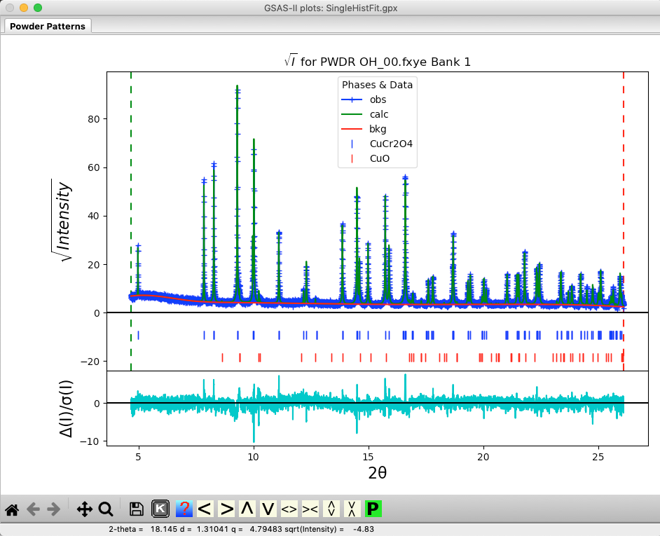
Without any prior knowledge, it is unclear if size or microstrain broadening (or both) might be expected for CuO, so initially, we might try refining both.
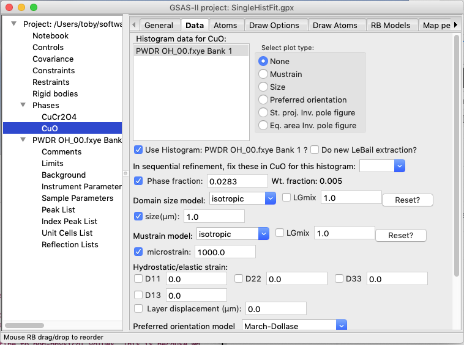
If this is done, we see that an unreasonable (0.001 μm) value is obtained for the size. With the peaks so much wider, the phase fraction rises to an unrealistic and much larger value. Note that 0.001 μm value is the smallest that GSAS-II allows and these “hard limits” can result in an unstable refinement. This results are not correct and should be reset.
One could simply reset the size parameter to the default and turn off refinement, but another option is to use parameter limits to do that for us.
Before setting parameter limits we will put the size/microstrain and phase fraction back to their previous values.
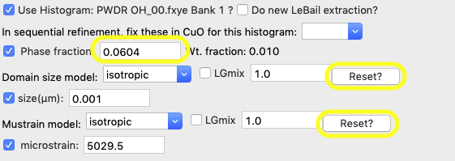
Press the Reset button for both the domain size and the Mustrain values. Note the size is reset to the 1.0 μm initial value and the microstrain to 1,000 (note that microstrain is a fractional broadening measure, expressed as ΔQ/Q x 106, so it has no units.) Likewise, reset the phase fraction to its approximate initial value, 0.03.
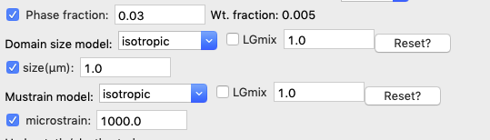
Use the Calculate/“View LS parms” menu command (shortcut: control-L or ⌘-L) to bring up the Least Squares Parameters window, as seen below. Note this is accessible from any tree item.
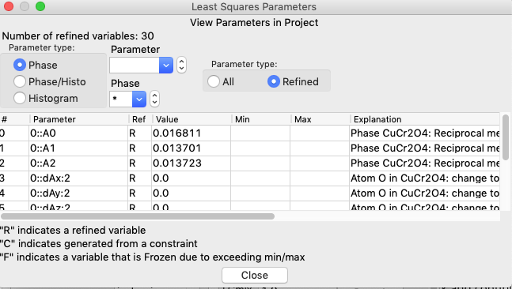
The size and microstrain variables are found in the Phase/Histo parameters (since there is a value for every phase in each histogram), so select Phase/Histo and to further simplify choices, the CuO phase (phase #1) only.
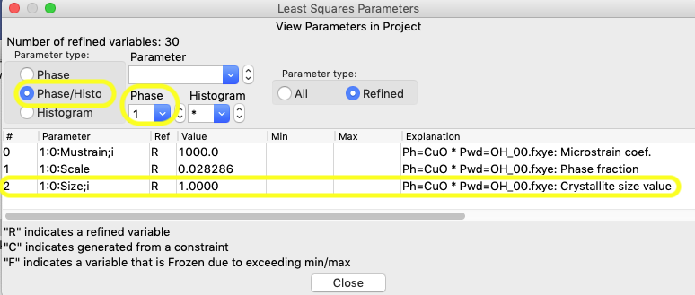
Then click anywhere on the row that lists the size variable for phase 1, 1:0:Size;i, and an editing window opens, as below.
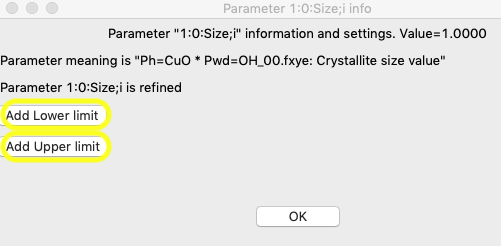
The reasonable range for the size requires some thought, but with a minor component, even though the resolution of the instrument would likely allow better, 2 μm is a good upper limit and for a lower limit, 0.1 μm is probably a good number, though for this purpose a larger number could be used. Press the “Add Lower limit” and “Add Upper limit” buttons, and add the specified values.
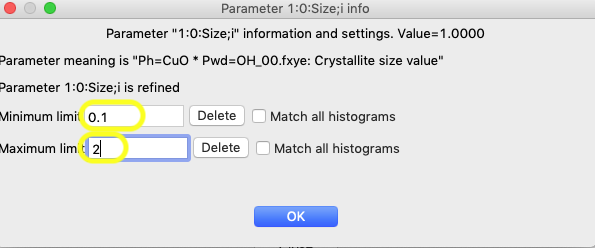
It will not have any effect in this particular refinement, but adding limits from 1000 to 20,000 for microstrain (variable 1:0:Mustrain;i), would also make sense to constrain that variable to a reasonable range.
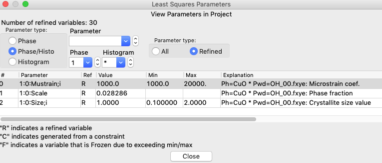
After the limits are set, start a refinement (Calculate/Refine menu or shortcut: control-R or ⌘-R). When this is done with limits in place, a new message will show up in the refinement results showing that a variable has been frozen:
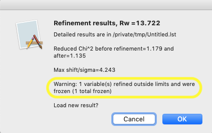
Likewise, revisiting the Least Squares Parameters window, as before, will now show that the size parameter has been set at the minimum value and this variable is now flagged as frozen with an F in the 3rd column, meaning that it will not be refined. Note that the rows of parameters that are frozen are also highlighted in yellow.
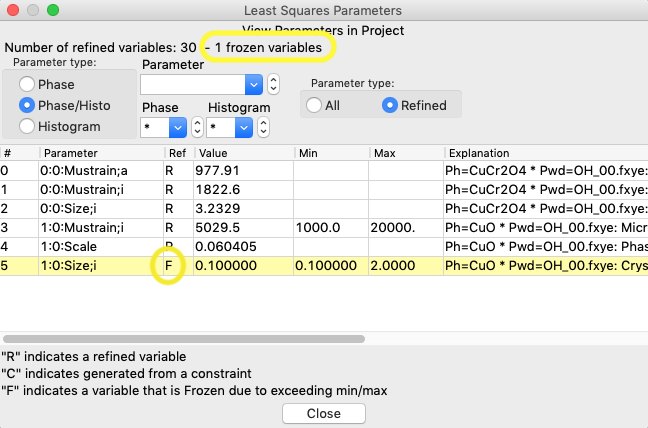
This has demonstrated how parameters limits are implemented. In fact, for this histogram, once the refinement of the phase fraction and the microstrain have settled into reasonable values, the freeze on the size broadening can be released and then the parameter will refine to yield a reasonable value.
There are two ways to release a frozen parameter. One is by clicking on the row of the now-frozen parameter the Least Squares Parameters window, where a new button is now present to remove the variable from the list of frozen parameters.
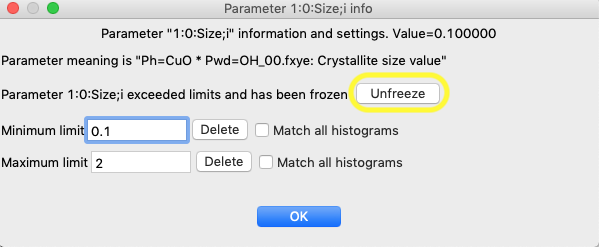
The other way is that all frozen variables can be released from the Controls tree item.
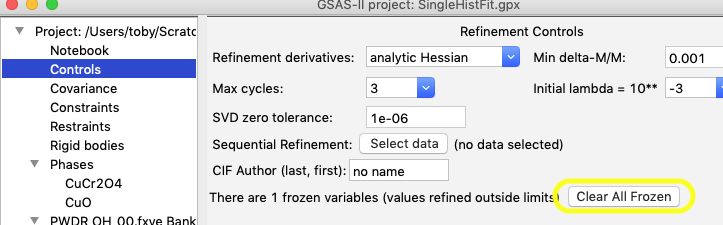
Parameter limits show an even greater value in sequential fitting, where many thousands of parameters may be varied (sometimes more), since the same parameter may be repeated for many histograms. In this exercise we will see how to use parameter limits in a sequential refinement.
A starting point for a sequential fit is supplied as file AllDataStart.gpx, which has the final results from Step 1 (where the frozen size variable has been freed). A large number of variables have been turned off so that an initial fit can be used to account for the changes in lattice parameters due to temperature and background, before allowing any other parameters to vary. These are the steps that were performed for to create this file:
· The additional 16 datasets were imported.
· For CuCr2O4: stop refining the cell, start refining the Djj (Hydrostatic strain) terms; do not refine any size or microstrain terms. Turn off XU (position & Uiso) refinement for atoms
· For CuO: stop refining the cell, start refining the Djj (Hydrostatic strain), but not the D13 term (related to the β angle); do not refine phase fraction, size or microstrain terms.
· For background, do not refine the background peak’s position or width.
· For sample parameters, do not refine the sample displacement.
· Copy the parameters: Under the main histogram tree item use Commands/“Copy params” to copy data limits, background, sample param. flags, etc. from histogram 0 to the rest.
· For both phases, use “Copy Data” in the Phases Data tab to duplicate the fit values as the initial values.
· Controls: set maximum cycles to 10; select all 17 datasets for sequential refinement and set the “Copy results to next histogram” flag.
Here we will set limits on the size and microstrain parameters in all histograms, as well as set a lower limit for the Uiso values.
Open the Least Squares Parameters window (Calculate/“View LS parms” menu command or control-L/⌘-L). Since none of the parameters to get limits are currently being refined, we will need to set to view all parameters rather than only refined parameters in the “Refinement status” radio buttons and then select the specific parameters.
Let’s start with the Uiso value, which is a phase parameter and has variables named as p::AUiso:a. In Parameter type select Phase; then select Parameter AUiso; and finally, the “Refinement status” All radio button. The Uiso parameters for the five atoms across the two phases are shown, as below.
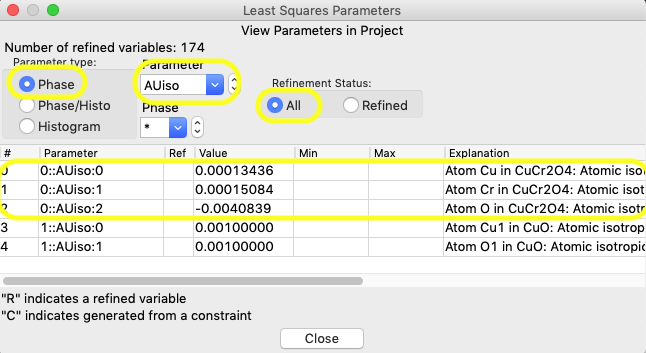
Click anywhere in the row for any of the atoms
in the CuCr2O4 (phase #0) in the window shown
above and, as in step 1, a window opens for that parameter, as seen below:
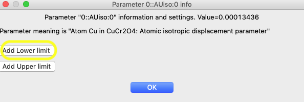
In that window, click on the “Add Lower limit” button and the window changes, as shown below. In that window, set the limit to 0.0. Also set “Match all atoms” so that the limit is applied to all atoms in that phase.
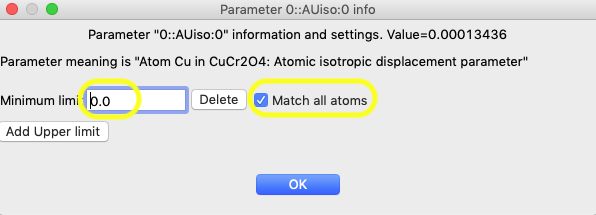
After pressing OK, note that the limits are now seen on the View Parameters window for the three intended atoms, as below:
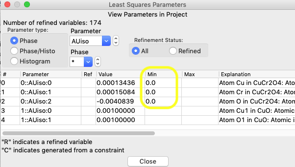
The limits set previously for crystallite size and μstrain were previously set only for the first histogram. We want to set them for all histograms.
Switch to Parameter type Phase/Histo; as before the “Refinement status” radio button needs to be All; Select Phase 1 (CuO) and for Parameter name, select “Size;i” (i for isotropic). The window should appear as below:
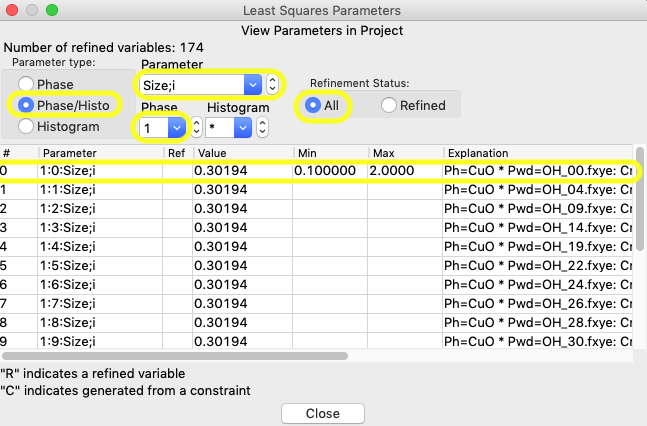
To extend the limits to all histograms, click anywhere in the first row, so that the window below opens:
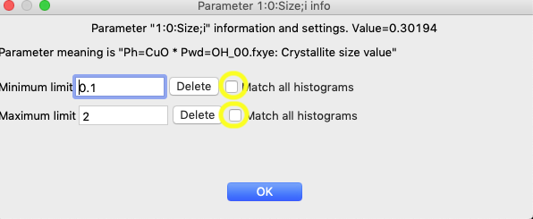
Click on the two “Match all histograms” buttons and OK and the limits now apply to all histograms:
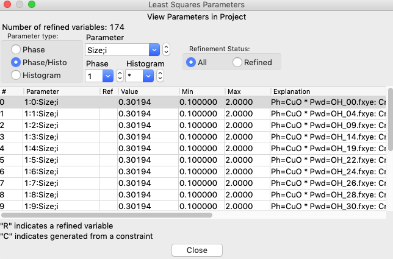
Repeat the above for the “Mustrain;i” parameter extending that to all histograms.
A) For the first sequential refinement, no additional parameters need to be added to the refinement. Use Calculate/“Sequential Refine” (or Control-R/⌘-L) to start the fitting.
B) For the second sequential refinement add the following parameters:
· In one histogram, add the Sample X displacement refine flag; Use Command/“Copy Flags” to copy this setting to all histograms.
· In the CuCr2O4 phase in the Data tab, turn on refinement of the size and the two microstrain flags. Use “Edit Phase”/“Copy Flags” to copy this setting to all histograms.
· In the CuO phase in the Data tab, turn on refinement of the Phase fraction flag. Use “Edit Phase”/“Copy Flags” to copy this setting to all histograms.
Use Calculate/“Sequential
Refine” (or Control-R/⌘-L) to start the fitting again.
C) For the third sequential
refinement we will add parameters that have limits:
· In the CuCr2O4 phase in the Atoms tab, turn on refinement of the XU flags for all atoms.
· In the CuO phase in the Data tab, turn on refinement of the Phase fraction flag. Use “Edit Phase”/“Copy Flags” to copy this setting to all histograms.
Use Calculate/“Sequential
Refine” (or Control-R/⌘-L) to start the fitting again.
Note that after this refinement a number of parameters are noted as frozen:
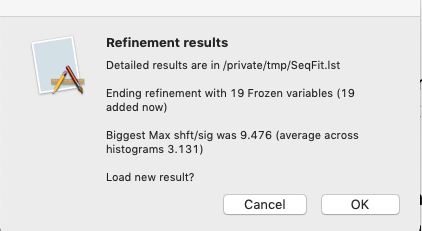
Also, a new column appears listing the number of frozen variables in the sequential results table.
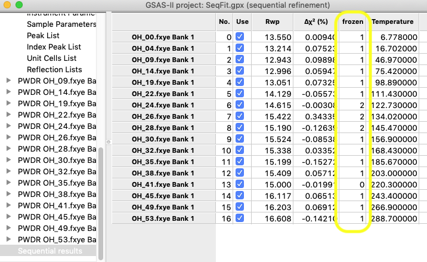
Resting the mouse above a cell in the table where a parameter is frozen will show that rather than an uncertainty (e.s.d.).
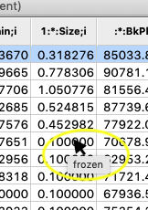
Based on these results, it is clear that size and μstrain cannot be refined for the CuO minor impurity and the fluctuations in this are causing the μstrain and phase fraction values to vary unreliably. Reset any frozen μstrain variables in the Least Squares Parameter viewer. Set reasonable values for size and μstrain using the results in the first histogram and turn off the size refine flag. Using “Copy Selected Data” copy the Scale, Size and Mustrain to all other histograms and repeat the refinement.
The O atoms now have their Uiso values fixed at 0.0 at lower temperatures, but these values do refine as the temperature increases. Weight fraction of CuO and μstrain values now vary reasonably smoothly (considering uncertainties). A second sequential fit causes the fit to converge well, as noted by small changes in Δχ2. The final result is provided as file SeqFit.gpx, though one could contemplate adding a few more parameters to the refinement, such as the width and position of the background peak and the CuO D13 variable. The SeqFit.lst file shows the final goodness-of-fit values (which range from 1.0 to 1.2, corresponding to a maximum reduced χ2 value of 1.4, so there is very little improvement to improve these models). Likewise, the variables that are frozen are shown in the .lst file as well.